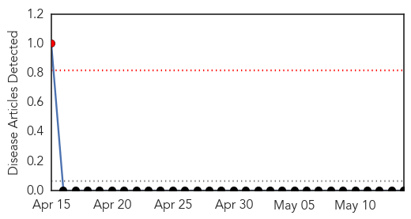
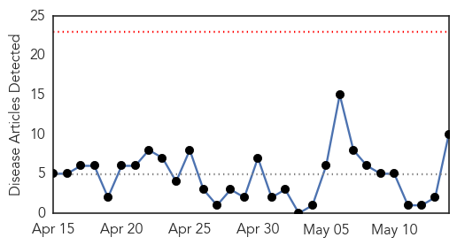
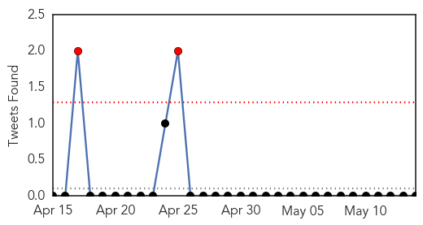
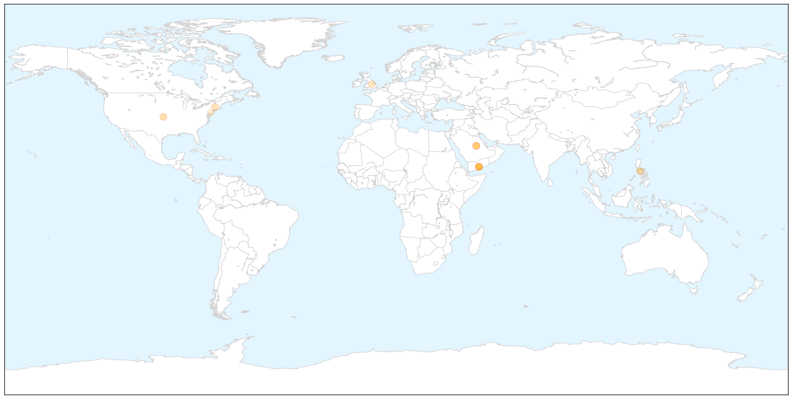

Bubonic Plague
30-Day Web Trend
1 alerts, 0 warnings

30-Day Twitter Trend
0 alerts, 0 warnings

Article Locations


Article Confidences

Top Articles:
-
No articles found for May 14, 2014
Top Tweets:
-
No tweets found for May 14, 2014
Influenza
30-Day Web Trend
0 alerts, 0 warnings

30-Day Twitter Trend
2 alerts, 0 warnings

Article Locations

X

Article Confidences

Top Articles:
- 1.000
- MERS is serious but is not yet a global health emergency, WHO says
- 1.000
- MERS is serious but is not yet a global health emergency, WHO says
- 0.999
- United Nations Warns Countries to Bolster Fight Against MERS Virus
- 0.999
- U.N. Warns Countries to Bolster Fight against MERS Virus — Naharnet
- 0.999
- UN warns countries to bolster fight against MERS virus
- 0.999
- UN warns countries to bolster fight against MERS virus
- 0.999
- UN warns countries to bolster fight against MERS virus (Update)
- 0.863
- Dog flu detected in Mass. for first time
- 0.733
- Signs of potentially fatal bacterial disease affecting the canine community
- 0.554
- ACP, CECity, and Pfizer collaborate to increase adult immunization rates
Top Tweets:
-
No tweets found for May 14, 2014